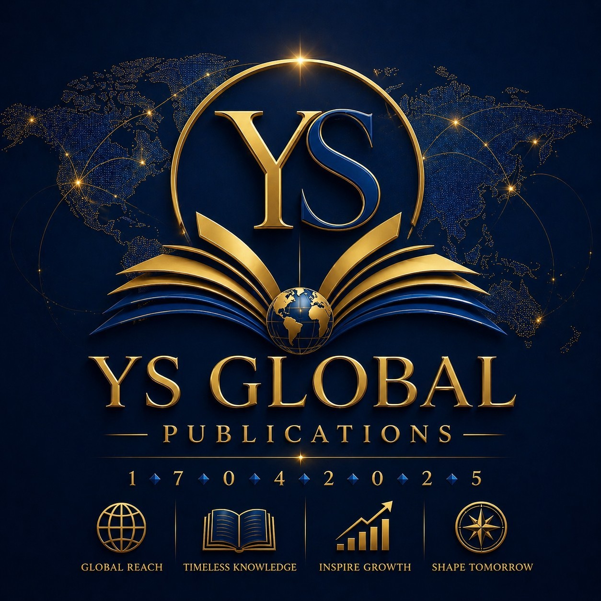
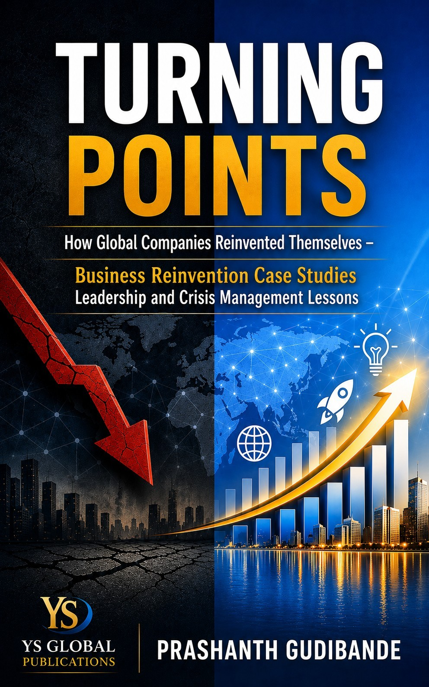
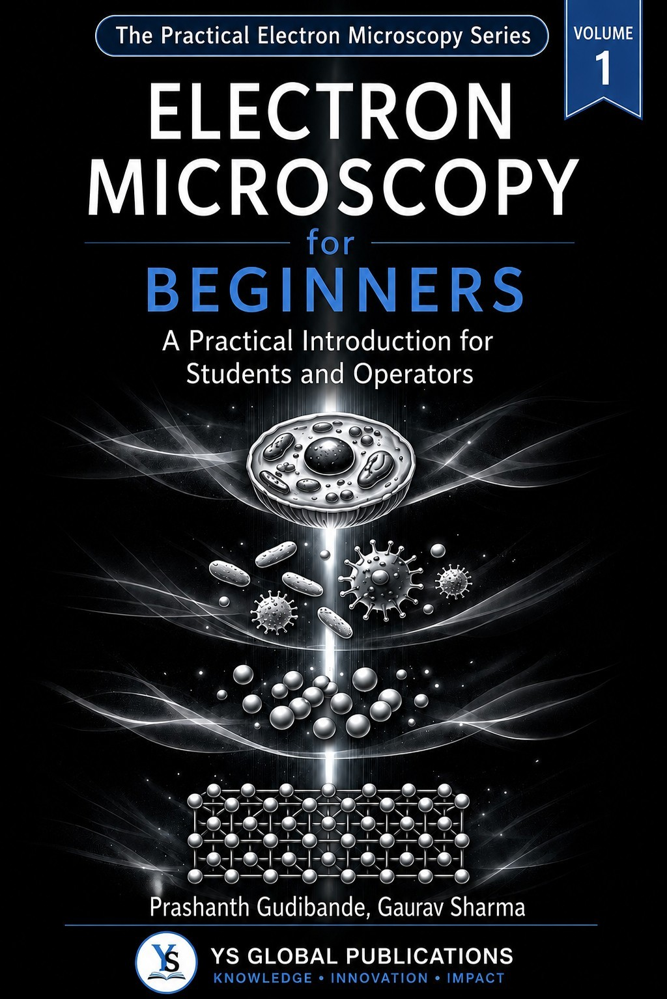
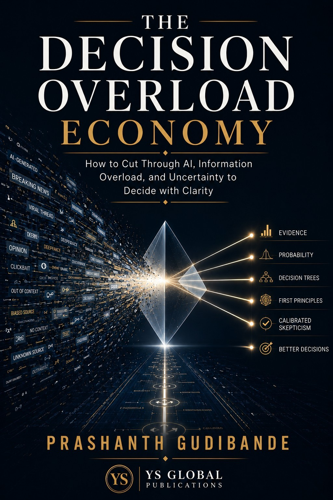
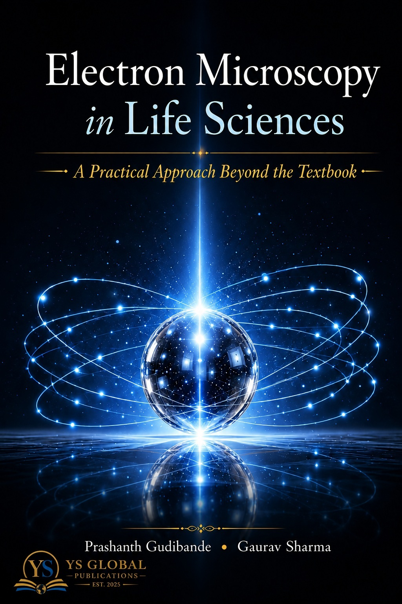

01
Knowledge
Building understanding through structured learning, research and insight.
YSG Global Ventures develops knowledge platforms, publishing initiatives and practical resources that connect ideas, learning, innovation and real-world value.
YSG Global Ventures exists to build, curate and communicate knowledge that has practical value.
We bring together research, industry experience, education, innovation and publishing to create resources that help people understand, learn, decide and act with greater clarity.
YSG Global Ventures develops initiatives across interconnected areas of knowledge creation, capability building and practical application.
Building understanding through structured learning, research and insight.
Creating practical platforms and resources that make knowledge accessible.
Connecting ideas with new possibilities, technologies and approaches.
Publishing books and professional knowledge for readers, learners and practitioners.
Translating knowledge into practical value, capability and meaningful outcomes.

Knowledge created, developed and published for readers, learners and professionals.
YS Global Publications develops and publishes books and professional knowledge resources designed to share practical experience, ideas and perspectives with a wider audience.

Reflections and practical perspectives on navigating change, decisions and the defining moments that shape professional and personal life.
Explore book →
A practical introduction to electron microscopy designed to build foundational understanding for students, operators and emerging professionals.
Explore book →
Exploring how artificial intelligence, information abundance and uncertainty are changing the nature of decisions in the modern economy.
Explore book →
A practical approach beyond the textbook, extending electron microscopy knowledge into life-science research and applications.
Structured learning, practical guidance and technical resources for understanding and applying electron microscopy.
PrEMReC brings together foundational knowledge, microscopy techniques, practical resources and professional applications for students, researchers and industry professionals.
Explore PrEMReC →Explore knowledge resources, publications, learning initiatives and professional material developed through the YSG ecosystem.
Structured information and practical resources for learning and application.
Content designed to support capability, understanding and professional development.
Ideas and observations on science, technology, business and decision-making.